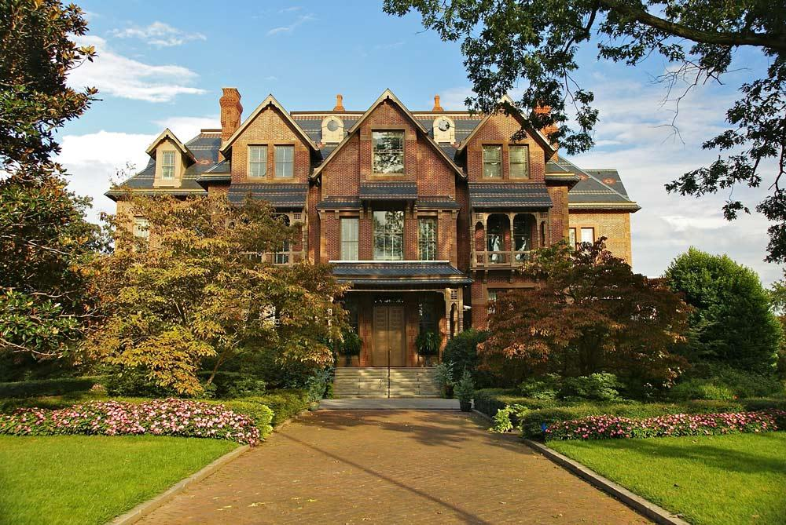

The Executive Mansion is the official residence of the Governor of North Carolina. Built in 1849, it has served as the home of the state's chief executive for over 170 years. The mansion features beautiful architecture and a rich history, offering visitors a glimpse into the lives of North Carolina's governors and the state's political heritage.